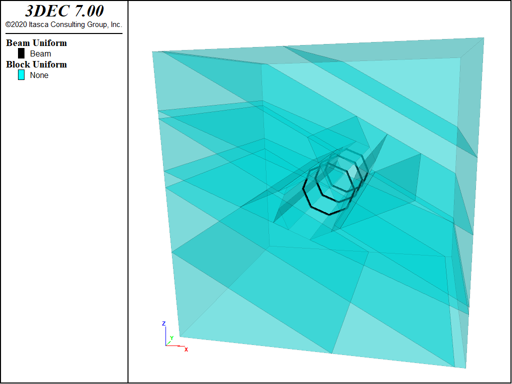
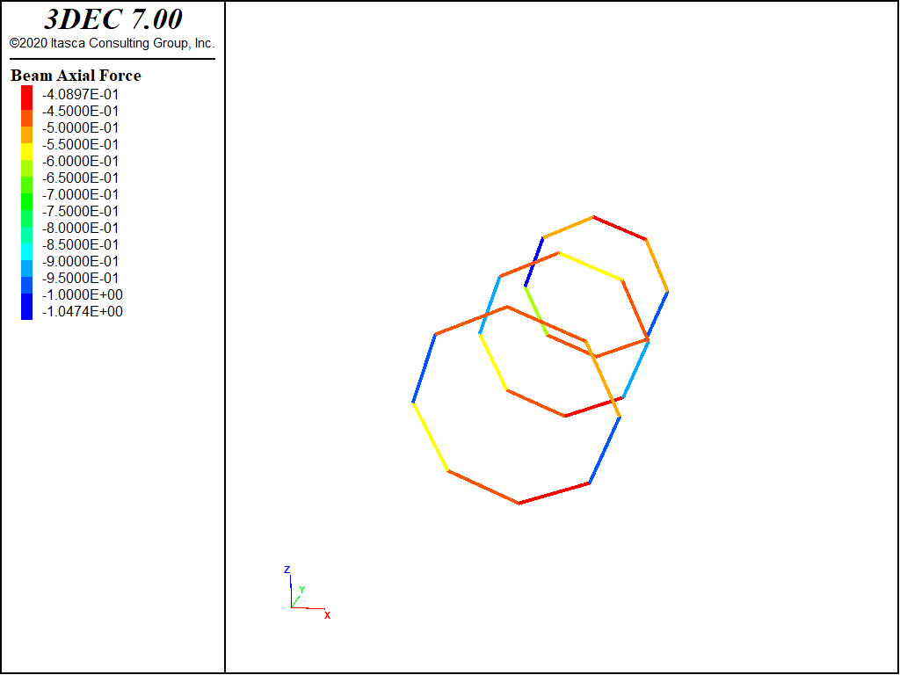
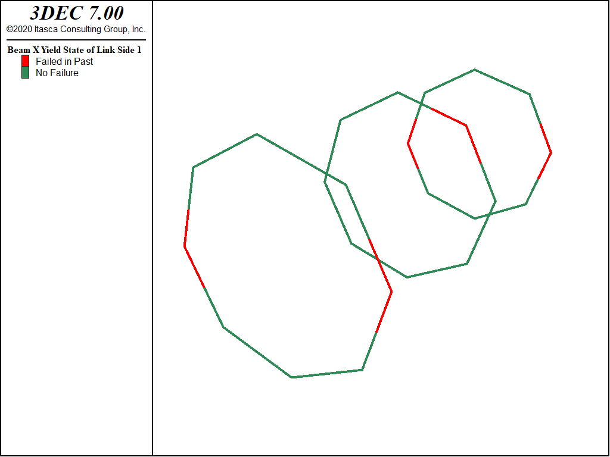

示例：节理隧道的环形支护
问题描述
注意
要在 3DEC 中查看该项目，请使用菜单命令 。选择 “BlockSel/ Beam/ JointedTunnel”，然后选择 “JointedTunnel.prj” 载入。所使用的数据文件显示在本示例末尾。
这是一个简单示例，演示如何使用 FISH 和 struct beam 命令在隧道内布置 3 圈梁单元支护环。梁单元的材料属性为：
| 面积 | 0.03 m^2 |
| 模量 | 200 GPa |
| 泊松比 | 0.3 |
| density | 2000 kg/m^3 |
| 惯性矩 | 0.00064 m^4 |
梁单元最初与岩石刚性连接。
图 1（Figure 1） 显示了梁单元在隧道内的布置，图 2（Figure 2） 给出了梁单元中的轴力。


图 1：带梁单元的隧道


图 2：隧道开挖后梁单元中的轴力。
随后重新运行模型，但此次允许梁单元滑动并与岩石分离。这通过修改连接附着条件和属性来实现，如下面的数据文件所示。 对于所赋的属性，部分梁单元连接达到其峰值剪应力并在模拟过程中开始滑动，如 图 3（Figure 3） 所示。


图 3：连接在局部 x 方向的破坏状态。
数据文件
beam.dat
model new
model random 10000
model large-strain on
; -------------------------------------------------------------------
; 结构单元算例
; 采用梁单元进行隧道支护
; -------------------------------------------------------------------
;
model title
'Beam example'
;
block create brick -25 25 -25 25 -25 25
;
block cut joint-set dip 30 dip-direction 90 num 5 spacing 10
;
block cut tunnel face-1 -5 -100 0 -3.5 -100 3.5 0 -100 5 3.5 -100 3.5 &
5 -100 0 3.5 -100 -3.5 0 -100 -5 -3.5 -100 -3.5 &
face-2 -5 100 0 -3.5 100 3.5 0 100 5 3.5 100 3.5 &
5 100 0 3.5 100 -3.5 0 100 -5 -3.5 100 -3.5 &
group 'exc'
;
block delete range group 'exc'
;
block zone generate edgelength 6
;
; E = 50000 MPa, v=0.25
; dens = 2500 kg/m3
block zone cmodel assign elastic
block zone prop dens 0.0025 bulk 33333 shear 20000
block contact jmodel assign mohr
block contact prop stiffness-normal 10000 stiffness-shear 4000 coh 1e10 tens 1e1
block contact material-table default prop stiffness-normal 10000 stiffness-shear 4000
;
block gridpoint apply vel-x 0 range pos-x -25
block gridpoint apply vel-x 0 range pos-x 25
block gridpoint apply vel-y 0 range pos-y -25
block gridpoint apply vel-y 0 range pos-y 25
block gridpoint apply vel-z 0 range pos-z -25
block gridpoint apply vel-z 0 range pos-z 25
;
block insitu stress -5 -5 -5 0 0 0
;
model gravity 0 0 -10
block hist dis-x pos 0,0,5
block hist dis-y pos 0,0,5
block hist dis-z pos 0,0,5
;
fish def make_beams
local start = vector(0,-10,0)
local axial_segments = 3
local radial_segments = 8
local radius = 5.0
local axial_spacing = 10.0
local mult_ = 2.0*math.pi/float(radial_segments)
loop local axial (1,axial_segments)
yy = start->y + (axial-1.0)*axial_spacing
loop local i (1,radial_segments-1)
xx = start->x + radius*math.cos(mult_*(i-1))
zz = start->z + radius*math.sin(mult_*(i-1))
xx_next = start->x + radius*math.cos(mult_*(i))
zz_next = start->z + radius*math.sin(mult_*(i))
; 同一环内的所有梁指定相同的 id，以
; 确保所有梁相互连接
command
struct beam create by-line ([xx] [yy] [zz]) ([xx_next] [yy] [zz_next]) id [axial]
end_command
end_loop
; 最后一段
last_point = vector(start->x + radius,yy,start->z)
command
struct beam create by-line ([xx_next] [yy] [zz_next]) [last_point] id [axial]
end_command
end_loop
end
[make_beams]
struct beam prop young 200000 poisson .3 cross-sectional-area .03 density 0.0025 ...
moi-y 6.4e-4 moi-z = 6.4e-4 moi-polar = 0.0
model save 'beam-initial'
model cycle 1000
;
model save "beam"
;
beam-sliding.dat
; 在梁与岩体之间添加滑动连接
model restore 'beam-initial'
; 设置为小应变模式，以免重置连接
model large-strain off
; 先运行 1 个计算循环，以建立局部坐标系
model cycle 1
; 设置连接可沿剪切方向滑动、沿法向分离
struct link attach x shear-yield
struct link attach y shear-yield
struct link attach z normal-yield
struct link property x stiffness 10e3 cohesion 1 friction 30
struct link property y stiffness 10e3 cohesion 1 friction 30
struct link property z stiffness 10e3 yield-tens 1
model cycle 1000
;
model save "beam-sliding"
;
| 这些内容对您有帮助吗？… | FLAC3D © 2019, Itasca | 原文更新于 2020 年 10 月 8 日 |